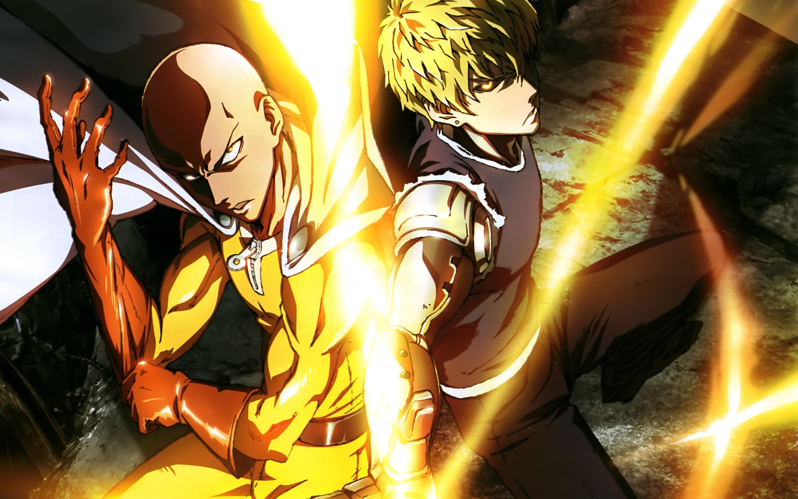
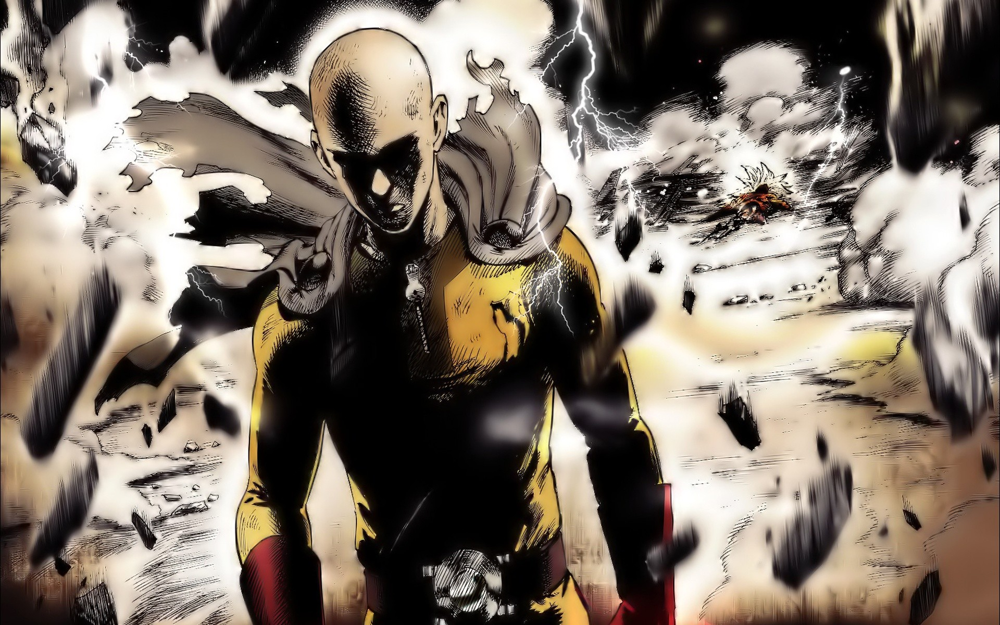
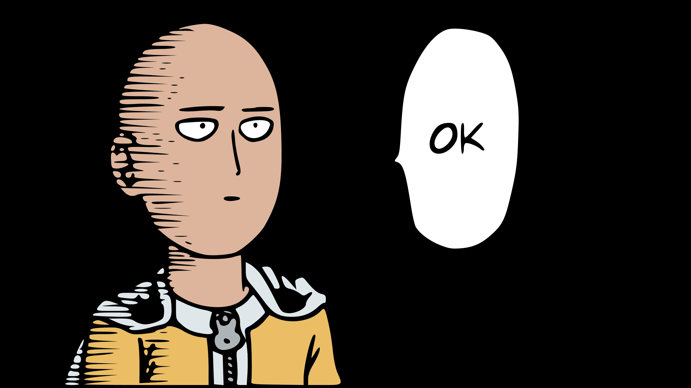
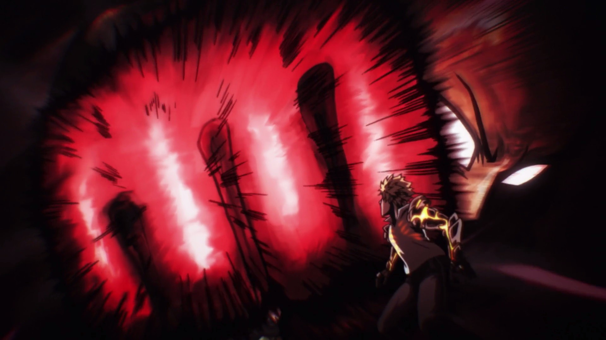

!!UWAGA!! Informacje w języku angielskim z powodu braku polskich źródeł. Za utrudnienia przepraszamy !!UWAGA!!
Galeria zdjęć:




Spis treści:
Czym jest One Punch man
One-Punch Man (Japanese: ワンパンマン, Hepburn: Wanpanman) is a Japanese superhero webcomic created by the artist One in early 2009. It has a manga adaptation illustrated by Yusuke Murata, as well as an anime adaptation. Following its publication, the webcomic
quickly went viral, surpassing 7.9 million hits in June 2012. One-Punch Man tells the story of Saitama, a superhero who can defeat any opponent with a single punch but seeks to find a worthy opponent after growing bored by a lack of challenge
in his fight against evil. The series' digital manga remake began publication on Shueisha's Tonari no Young Jump website in 2012. The chapters are periodically collected and printed into tankōbon volumes. As of November 2019, 20 volumes
have been released, 17 of which have been republished in English. Viz Media has licensed the remake for English serialization in its Weekly Shonen Jump digital magazine. Its English release received a nomination for an Eisner Award in
2015 and a Harvey Award in 2016.
Powrót na górę strony
Fabuła
On a supercontinent Earth, powerful monsters and villains have been wreaking havoc in the cities. To combat them, the millionaire Agoni creates the Hero Association, which employs superheroes to stop them. Saitama, an unassociated hero, hails from the
metropolis of City Z and performs heroic deeds for his own entertainment. He has trained himself to the point where he can effortlessly defeat any opponent with a single punch, becoming bored with his own omnipotence. Over the course of
the series, Saitama encounters various superheroes, friends, villains, and monsters. He reluctantly becomes a mentor to Genos, a cyborg who moves in with him and is seeking revenge against another cyborg who killed his entire family and
hometown. Saitama and Genos join the Hero Association. Saitama performs many feats that go mostly unnoticed and unappreciated by the public due to his low-entry rank. Before she dies, the seer Shibabawa has a vision that the world is in
danger. The Hero Association calls all the top heroes to a meeting, begging them to protect the world. Immediately after the meeting, an alien named Boros invades the planet. The heroes fight the invaders outside Boros's ship, while Saitama
finds Boros and defeats him. Saitama gradually begins to meet other superheroes such as the martial artist Bang; and King, the "Strongest Man on Earth", who is actually a fraud quietly taking credit for Saitama's deeds. Growing increasingly
aware of the rising rate of monster appearances, the Hero Association tries to recruit more heroes and even begins recruiting villains. When Hero Association executive Sitch tries to do so, Bang's former apprentice Garo begins beating
heroes left and right. Garo's ruthlessness earns him the title "Hero Hunter". Saitama enters a martial arts tournament disguised as Charanko, a disciple of Bang. During the tournament, the Monster Association attacks various cities, kidnaps
the child of one of the Hero Association's executives, and recruits potential fighters by offering them "monster cells" that mutate them into monsters with extraordinary abilities. The Hero Association attempts a rescue of the kidnapped
child.
Powrót na górę strony
Moje ulubione postaci:
- Saitama (サイタマ, Saitama) is the main protagonist of One-Punch Man and the most powerful being to exist in the series. Saitama faces a self-imposed existential crisis, as he is now too powerful to gain any thrill from battle. Initially just
a hero for fun, Saitama later registers to be a professional hero for the Hero Association and defends his home in Z-City from monsters, villains, and other threats. Under the Hero Association, he is assigned the hero name Caped Baldy
(ハゲマント, Hagemanto; Viz: Bald Cape) and is currently ranked 7 in the B-Class. Saitama is an indifferent person. Even the mightiest foes pose no challenge to him, so he does not take his hero work seriously, goes through everything with
little to no effort, and yearns for an opponent that can provide him with a challenge. The lack of worthy opponents has led him to suffer from a self-imposed existential crisis, and he claims that his ability to feel any and all emotions
has dulled considerably. The combination of his attitude, unstoppable power, and "unimpressive" appearance often causes his battles to become anticlimactic. Saitama will usually allow his opponents to rant about their motives and power
up into their strongest forms, before obliterating them with a single punch.
- Tatsumaki (タツマキ, Tatsumaki; Viz: Tornado), also known by her hero alias Tornado of Terror (戦慄のタツマキ, Senritsu no Tatsumaki; Viz: Terrible Tornado), is the S-Class Rank 2 professional hero of the Hero Association. She is recognized as one
of the Hero Association's most powerful heroes. She is an esper and the older sister and self-declared teacher of Fubuki. She and her sister are known as the Psychic Sisters.Tatsumaki has a rather brash, moody, hotheaded, and impatient
personality. She is disrespectful towards most people, especially to those she deems incompetent. She is completely intolerant to those she deems impertinent, as shown when she slammed Genos into a large piece of rubble for retaliating
against her verbal abuse of Saitama. Tatsumaki especially dislikes being ignored or being called things like "brat" and "runt". Despite her arrogant personality, she feels obligated to defeat monsters and considers her job as a hero
to be a duty, accepting any of the Hero Association's requests to defeat monsters. Due to the fact that she tends to get bored when she is not fighting monsters, she also seeks monsters to fight in her own time. She has a bit of a
soft side towards her little sister, Fubuki, but she is also very overprotective and controlling of her.
- King (キング, Kingu) is the S-Class Rank 7 professional hero of the Hero Association. In public, King is known as "The Strongest Man on Earth" (地上最強の男, Chijō saikyō no otoko) and "The Heroes' Hero". In truth, however, he is just a normal
civilian who unintentionally gained credit for the heroic acts performed by Saitama. King is also one of the few people aware of the true extent of Saitama's power and is part of the Saitama Group.When in a threatening situation, King
appears calm and displays an intimidating aura. Despite the intimidating personality he projects, King is usually a coward. He is well respected by the public and other heroes, even those in the upper echelon of the Hero Association.
King also has a caring side, worrying about Saitama's well-being and offering insightful advice as well as inviting him to play video games. King even promises to play with only two fingers to handicap himself against Saitama.
Powrót na górę strony